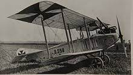

Le 5 octobre 1914, le sergent Joseph Frantz et son mécanicien-mitrailleur, le caporal Louis Quenault, à bord de leur biplan Voisin, croisent la route d’un Aviatik allemand qu’ils parviennent à abattre, remportant ainsi la première victoire aérienne de l’histoire.

Les premiers avions fait de toile sont chargées de tâches de reconnaissance destinées à renseigner le commandement sur les mouvements de l’ennemis, mais aussi de lâcher des explosifs et des fléchettes en acier sur les troupes adverses.
L'avion est propulsé par un moteur de 110 Ch situé à l’arrière du fuselage et de structure entièrement métallique. Il présente la particularité d’avoir été armé d’une mitrailleuse Hotchkiss, fixée sur un trépied et installée par le constructeur, Gabriel Voisin, en personne et ami du capitaine Faure. Quenault prend place derrière le pilote, avec à ses pieds les obus et devant lui la mitrailleuse dont la fourche mobile permet de balayer l’horizon à 180 degrés.
Alors qu’ils évoluent dans les lignes françaises à près de 2 000 mètres, les deux hommes aperçoivent un biplan Aviatik dont l’équipage, composé du sergent Wilhelm Schlichting, pilote, et du lieutenant Fritz von Zangen, observateur, est armé d’une simple carabine. Frantz décide aussitôt de se placer dans l’axe de son ennemi, légèrement en arrière et un peu au-dessus, afin de permettre à son équipier d’ajuster son tir.
Ce n’est pas la première fois que Frantz et Quenault engagent le combat. À onze reprises ils ont déjà tenté d’abattre un appareil adverse et savent qu’il faut s’approcher à moins de 10 mètres et tirer avec leur mitrailleuse au coup par coup (car cette dernière présente le fâcheux défaut de s’enrayer inopinément). Dans cette configuration, l’Aviatik est gêné par son moteur, l’hélice, et les empennages de l’arrière qui limitent le tir de l’observateur.
Pendant près d’un quart d’heure, Quenault tire avec régularité quarante-sept balles tandis que le pilote allemand tente d’exécuter une large spirale afin d’échapper à l’assaillant. Alors que la mitrailleuse s’enraye et que Quenault commence à démonter la culasse, Frantz voit l’Aviatik soudain se cabrer, s’abattre sur l’aile gauche et piquer à la verticale pour s’abattre en flammes dans les marais près de Jonchery-sur-Vesle, sous les yeux du général Franchet d’Esperey.
Pour la première fois dans l’histoire, un aéroplane en a abattu un autre, inaugurant ce qui allait devenir le combat aérien. Cette première victoire vaut au sergent Frantz la Légion d’honneur et au caporal Quenault la Médaille militaire.
source: france archive